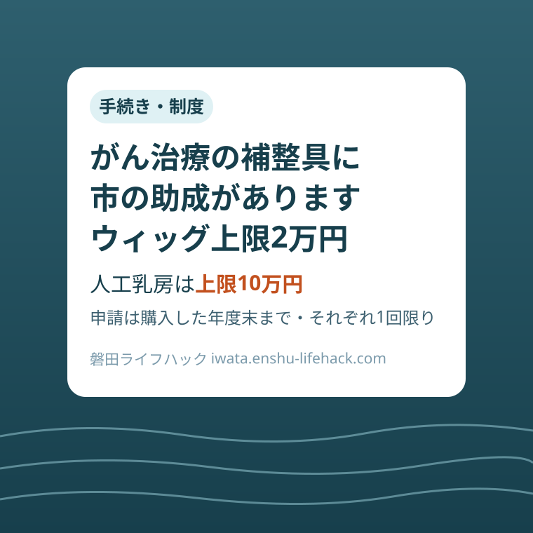

手続き・制度
磐田市のがん患者アピアランスケア助成｜医療用ウィッグ上限2万円・人工乳房は上限10万円、申請は購入した年度末まで

この記事の要点
Q. 磐田市のがん患者アピアランスケア助成は、誰が、いくらまで受けられますか？
A. 申請時に磐田市に住所があり、がん治療で脱毛や乳房の変形があった方が対象です。医療用ウィッグは上限2万円、補整下着は上限2万円、人工乳房は上限10万円（補整下着と人工乳房はどちらか一方）で、それぞれ1回限り。申請は購入した年度の3月31日まで、窓口はiプラザ3階の健康増進課（電話0538-37-2011）です。
導入——治療の途中でも「いつもの自分」でいるために
がんの治療が始まると、薬の副作用で髪が抜けたり、手術で乳房の形が変わったりすることがあります。外見の変化は、体力の回復とは別のところで、仕事や買い物、人と会う予定をためらわせます。治療そのものに集中したい時期に、もう一つの負担が重なるわけです。
先に結論を書きます。磐田市には、がんの治療によって必要となった医療用ウィッグと乳房補整具の購入費用を助成する「磐田市がん患者医療用補整具購入費助成事業」があります。医療用ウィッグは上限2万円、補整下着は上限2万円、人工乳房は上限10万円で、それぞれ1人1回限りです。申請先は、iプラザ3階の健康増進課健康支援グループです。
この記事では、2026年11月20日に磐田市公式の案内チラシと申請書様式で確認した範囲に絞って、対象になる方、金額の考え方、対象外になるもの、申請の書類と期限を整理します。制度の細部は年度で変わることがあるため、最後は市の最新案内で確かめる前提で読んでください。
まず、公式資料から事実を整理する
対象になるのは、次の要件をすべて満たす方です。第一に、申請時に磐田市に住所があること。第二に、がんと診断され、その治療により脱毛した方、または外科的治療等による乳房の変形に対する医療用補整具を購入した方であること。第三に、過去に磐田市や、県内外の自治体から同種の助成を受けていないことです。
ここで大切なのは、助成の対象が「がんの治療に伴う外見の変化」に結びついている点です。脱毛は化学療法や放射線療法など、乳房の変形は外科的治療等が原因であることが、申請書類で確認されます。病気そのものの治療費を助成する制度ではなく、治療の結果として必要になった補整具の購入を支える制度だと理解すると、書類の意味が見えてきます。
市のチラシは、この事業の目的を「がん患者さんの就労や社会参加を応援するために」と書いています。外見のケアは、見た目の問題であると同時に、職場へ戻ることや地域の集まりに出ることの後押しでもある、という市の位置づけが読み取れます。
なお、助成を受けられるのは医療用ウィッグと乳房補整具のそれぞれについて1回限りです。引っ越し前の自治体で同種の助成を受けたことがある方は、磐田市では対象になりません。逆に言えば、他の自治体で受けたことがなければ、治療の途中で磐田市に住んでいる方は市の窓口で相談できます。
助成の中身——ウィッグ2万円、補整下着2万円、人工乳房10万円
助成の対象と上限額は、品目ごとに決まっています。医療用ウィッグは全頭用であるものが対象で、毛付き帽子と、装着時に皮膚を保護するネットを含みます。上限額は2万円です。髪の抜け方には個人差がありますが、市の線引きは「全頭用」という形で示されています。
乳房補整具は二つのうちどちらか一方です。一つ目は補整下着で、パッドを含み、上限額は2万円。二つ目は人工乳房で、上限額は10万円です。ただし、乳房再建術等によって体内に埋め込まれたものは人工乳房の対象から除かれます。体の外に着ける補整具が対象、と覚えると分かりやすいでしょう。

金額の計算は単純です。購入額が上限額に満たない場合は、実際に購入した金額が助成されます。上限を超えた分は自己負担です。また、購入する個数は問われませんが、複数購入した場合でも助成は上限額までとなります。たとえばウィッグを2点買っても、助成の合計は2万円が上限です。
上限額だけ見ると、人工乳房の10万円が大きく見えます。これは品目の価格帯の違いを反映したもので、補整下着と人工乳房のどちらが自分の治療経過に合うかは、主治医や購入先と相談して決める部分です。制度の側は、どちらか一方を選ぶ形になっています。
対象外になるもの——付属品・ケア用品・交通費・ポイント分
対象外の線引きも、チラシに具体的に書かれています。まず、毛がついていない帽子は対象外です。ウィッグの付属品とケア用品、具体的にはクリーナー、リンス、ブラシ等も対象外になります。本体は対象でも、手入れ用品は別、という線引きです。
購入のために要した交通費と郵送費も対象外です。インターネット等で購入した際に、ポイントを利用して支払った分も助成の対象になりません。ネット通販で買うこと自体は妨げられていませんが、ポイントで割り引かれた分は購入額に数えられない、という点は覚えておきたいところです。
チラシには「助成対象かどうか判断に迷う際には、申請前にお問い合わせください」と明記されています。毛付き帽子のように境界が分かりにくい品目もあるため、買う前に健康増進課へ確認するのが確実です。買った後では対象外と言われても取り返しがつきません。
申請の段取り——書類は3点、期限は年度末
申請に必要な書類は大きく3点です。1点目は、がん患者医療用補整具購入費助成金交付申請書（様式第1号）。健康増進課で受け取るか、市のホームページからダウンロードできます。代筆は可能ですが、申請者は治療を受けた本人とし、未成年の場合は申請者欄に保護者の名前を記入します。振込口座の名義人が請求者でない場合は、委任状欄の記入も必要です。
2点目は、がんの治療に伴い脱毛、または外科的治療等による乳房の変形があったことを証明する書類です。診断名（病名）と、化学療法・放射線療法等の記載のある書類が求められます。具体的には、治療に関する説明書、治療方針計画書、診断書などが例示されています。乳房補整具の場合は、診断名と外科的治療等の記載のある書類です。電子申請の場合は画像データを添付します。

3点目は、医療用補整具の購入に係る領収書で、原則として原本を提出します。領収書がない場合は、氏名、購入日、購入金額、品名、購入先の名称と住所のすべてを確認できる書類を併せて提出します。クレジットカード会社からの請求明細書、申し込みの受注確認メールのコピー、納品書、パンフレット、カタログ等が例として挙げられています。ネットで買う方は、受注確認メールを消さずに残しておくことが実務上の備えになります。
期限は、購入した日の属する年度末、つまり3月31日までです。ただし、1月から3月に購入した場合は、購入日から90日以内に申請します。年度末に慌てないよう、購入したら早めに書類をそろえるのが安全です。窓口、郵送、電子申請のいずれでも申請できます。
電子申請と窓口——iプラザ3階の健康増進課
電子申請は、スマートフォンやパソコンから行えます。市のチラシに電子申請のURLが掲載されています。電子申請の場合も、証明書類と領収書は画像データの添付が必要です。振込先の口座情報が記載された箇所のデータ添付も求められます。
注意点が二つあります。一つは、振込口座の名義人が申請者と異なる場合、自筆の委任状の添付が必要なことです。家族の口座へ振り込んでもらう場合は、ここで手続きが止まらないよう先に確認してください。もう一つは、窓口や郵送で申請し、ゆうちょ銀行への振り込みを希望する場合は、通帳のコピー（口座情報の記載箇所）も提出することです。
問い合わせと書類の提出先は、磐田市健康増進課健康支援グループで、iプラザ3階にあります。住所は磐田市国府台57番地7、電話は0538-37-2011です。市のホームページでは、検索のページ番号1007569でも案内が見つかります。治療の予定に合わせて動く制度なので、購入前の相談も含めて、まず電話で確認するのが早道です。
磐田の暮らしに置き換える——買う順番で損をしない
この制度で実務上いちばん大切なのは、買う順番です。助成は購入した後の申請なので、対象になる品目かどうかを買う前に確かめ、領収書を確実に残す。この二つを守るだけで、手続きの大半は滑らかに進みます。
治療の流れに置き換えると、抗がん剤治療が決まった段階で、脱毛に備えてウィッグを検討する方が多くいます。その時点で市のチラシを確認し、対象の形（全頭用）や上限額を押さえておくと、購入先での選び方も変わります。価格だけでなく、助成の上限2万円との兼ね合いで選べるからです。
乳房補整具は、手術後の経過を見ながら選ぶ品目です。補整下着と人工乳房のどちらか一方という条件があるため、急いで決めず、回復の段階と生活の場面に合わせて、医療機関や購入先の相談窓口と一緒に選ぶのが現実的です。
評価——良い点と、注文したい点
良い点は、まず金額の示し方が明確なことです。ウィッグ2万円、補整下着2万円、人工乳房10万円と品目ごとの上限が先に分かり、購入額が上限未満なら実費分が出ることも明記されています。計画が立てやすい制度です。
次に、申請の入口が三つある点です。窓口だけでなく、郵送と電子申請が用意され、治療中でも自宅から手続きを進められます。書類の代替手段（領収書がない場合の確認書類）まで例示されているのも、実務に即しています。
注文したい点は、制度の存在自体が、必要になる時期まで目に触れにくいことです。治療が始まってから慌てて調べる方が多いはずで、医療機関の窓口や市の検診案内など、がんに関わる接点でこの制度への案内がもう少し目立つと、買う前の確認が徹底されると思います。
もう一点、対象外の線引き（付属品・ケア用品・ポイント分）は、購入後に知ると落胆が大きい部分です。チラシには明記されていますが、購入先の店頭でも一言添えられるような連携があると、制度の使い勝手はさらに良くなります。
対案・結論——「買ってから知る」をなくす
対案として提案したいのは単純で、購入前の確認を一つの手順として広めることです。買う前に健康増進課へ電話し、品目が対象かどうかを確かめる。領収書と受注確認メールを残す。年度末の期限をカレンダーに入れる。この三つで、助成を受け損なう場面は大きく減ります。
結論として、この助成は「治療費の補助」ではなく「治療と並行する生活の補助」です。金額の大小だけでなく、就労や社会参加を応援するという市の目的に沿って、必要な時期に、必要な品目へ使うことが大切です。
身近な方が治療を始める場合にも、この制度の存在を早めに伝えてあげてください。情報を持っているかどうかで、購入の判断と家計の見通しが変わります。
確認する順番
一に、自分が対象の要件（市内に住所、治療に伴う脱毛または乳房の変形、過去に同種の助成なし）を満たすかを確認します。要件の判断に迷う場合は、購入前に健康増進課へ問い合わせます。
二に、買いたい品目が対象の形に合うかを確認します。ウィッグは全頭用、乳房補整具は補整下着か人工乳房のどちらか一方です。付属品やケア用品は対象外であることも、この段階で押さえます。
三に、購入後は領収書を保管し、申請書、証明書類、領収書の3点をそろえて、年度末（1月から3月の購入は90日以内）の期限までに申請します。電子申請を使う場合は、書類の画像データと口座情報の添付を忘れないようにします。
家族で共有するための記録
治療中の手続きは、本人が一手に担うと負担が大きくなります。申請書は代筆が認められているため、家族が記入を手伝うこともできます。ただし申請者は治療を受けた本人であり、口座名義が異なる場合は委任状の扱いが変わる点は、家族で共有しておきたい決まりです。
購入日、購入金額、購入先、申請した日を、領収書と一緒に一つの封筒やフォルダにまとめておくと、後からの確認が容易です。年度末の期限管理も、家族のカレンダーで共有しておくと安心です。
証明書類は、治療の説明書や治療方針計画書など、医療機関から受け取る書類が使えます。受診のたびに受け取る書類を捨てずに残しておくことが、そのまま申請の備えになります。
大石の視点
大石の視点として、この制度は「外見のケア」を公的な支援の対象として正面から認めている点に意味があると感じます。脱毛や乳房の変形は、命に直接関わらない分、相談しにくく、費用も後回しにされがちです。そこに市が上限額を示して助成する仕組みは、治療と生活を切り離さない姿勢の表れだと思います。
一方で、制度は知らなければ使えません。アピアランスケアという言葉自体、まだ一般には浸透していないはずです。市のチラシが「就労や社会参加を応援する」と目的を言葉にしているのは良いことで、この目的が医療機関や地域の集まりを通じて伝わることが、制度の実効性を左右します。
金額についても、上限2万円や10万円は、品目の価格からすれば全額ではありません。それでも「公的な後押しがある」という事実が、購入をためらう気持ちを前に進めることがあります。支援の役割は、金額だけでは測れない部分があると感じます。
まとめ
磐田市のがん患者医療用補整具購入費助成は、医療用ウィッグ上限2万円、補整下着上限2万円、人工乳房上限10万円を、それぞれ1回限りで助成する制度です。対象は、申請時に市内に住所があり、がん治療で脱毛や乳房の変形があった方で、過去に同種の助成を受けていない方に限られます。
申請は、購入した年度の3月31日まで（1月から3月の購入は90日以内）に、申請書、証明書類、領収書の3点を、iプラザ3階の健康増進課へ。窓口、郵送、電子申請が選べます。買う前の確認と領収書の保管が、確実に受け取るための要点です。